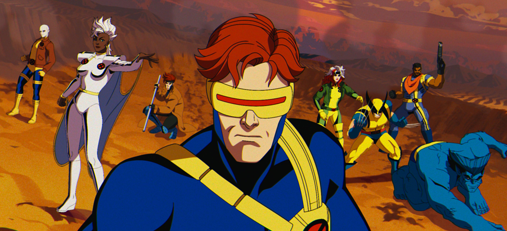
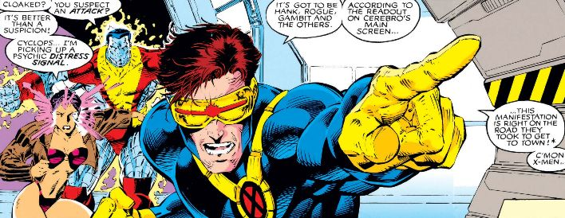

Scott Summers, conhecido pelo nome de Ciclope, é um personagem fictício que aparece na série de quadrinhos da Marvel Comics. Ele é membro dos X-Men e possui o poder de emitir raios de energia por seus olhos. Pode-se dizer que é o membro mais importante de todo o contexto dos X-Men, tendo em vista que foi o membro que apareceu em mais edições, além de ser o líder mais consistente da equipe.
Galeria de imagens


